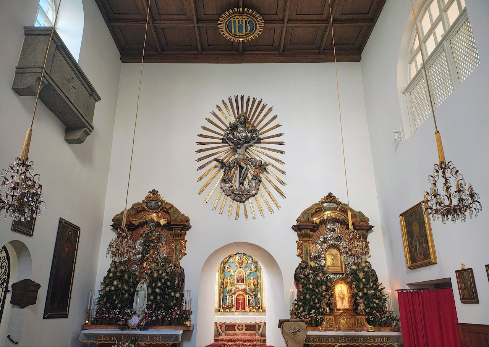
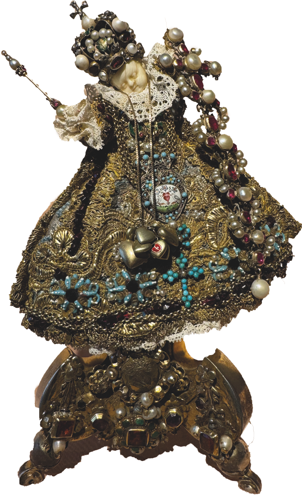

Loreto Convent Salzburg
Convent church of St Mary Loreto of the Capuchin Poor Clares of Perpetual Adoration in Salzburg
Schedule of Masses and Confessions
Schedule of Masses and Confessions
in the Church of Perpetual Adoration St Mary Loreto
Holy Masses:
Sundays and Feast Days:
• 6:30 a.m. (Tridentine Rite)
• 8:00 a.m.
Weekdays:
• 6:30 a.m. (Tridentine Rite)
• 8:00 a.m.
Rosary (daily):
• 5:00 p.m. with Eucharistic Benediction
• 7:00 p.m.
Confession:
• Sundays and feast days: 7:30 a.m. – 8:00 a.m.
• Weekdays: 7:30 a.m. – 8:30 a.m.
• Monday to Thursday, Saturday: 4:15 p.m. – 5:15 p.m.
• Friday: no confessions in the afternoon
• Fatima Day (13th of each month before Holy Mass): 6:00 p.m. – 7:00 p.m.
Opening hours of our convent gate
(subject to change)
The blessing with the Graced Loreto Child is given:
Sundays and Feast Days:
• 9:00 a.m. – 9:45 a.m.
• 3:00 p.m. – 3:30 p.m.
Weekdays:
• 8:30 a.m. – 10:00 a.m.
• 3:00 p.m. – 4:00 p.m.
Saturdays and days before feast days:
• 8:30 a.m. – 10:00 a.m.
• 3:00 p.m. – 3:30 p.m.
Fatima Day (13th of every month):
• As above
• Additionally: 5:30 p.m. – 6:30 p.m.
Faithful who are unable to come during the blessing times receive the blessing of the Loreto Child from afar every day at 2:30 p.m.!
Welcome to the Loreto Convent of the Capuchin Poor Clares of Perpetual Adoration and to the Church of St Mary Loreto in Salzburg

Our Community
The Church of St Mary Loreto
The Famous Loreto Child
Contact & Visit
Kapuzinerinnen v. d. Ewigen Anbetung, St. Maria Loreto
Paris‑Lodron‑Straße 6
5020 Salzburg, Austria
Telephone: +43 (0)662 871163
Email: We live offline – but with a very good connection upwards ;‑)
Donations account: AT 33 2040 4000 0000 3343
We look forward to your visit to the church of St Mary Loreto – whether for quiet personal prayer, for joining us at Holy Mass, or to receive the special blessing of the Loreto Child.